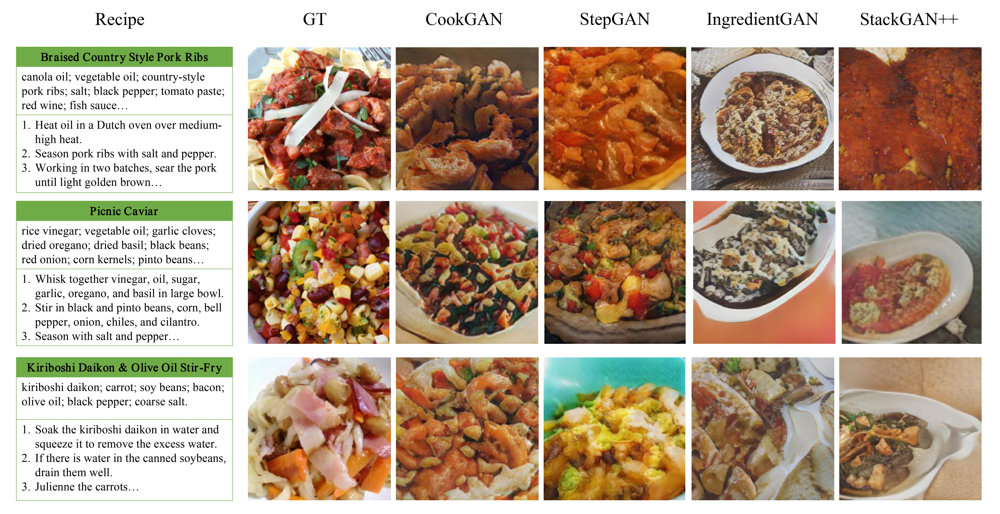
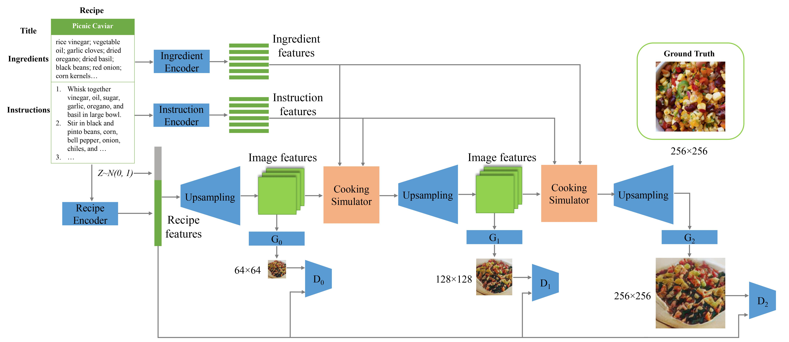
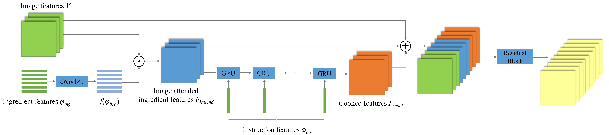
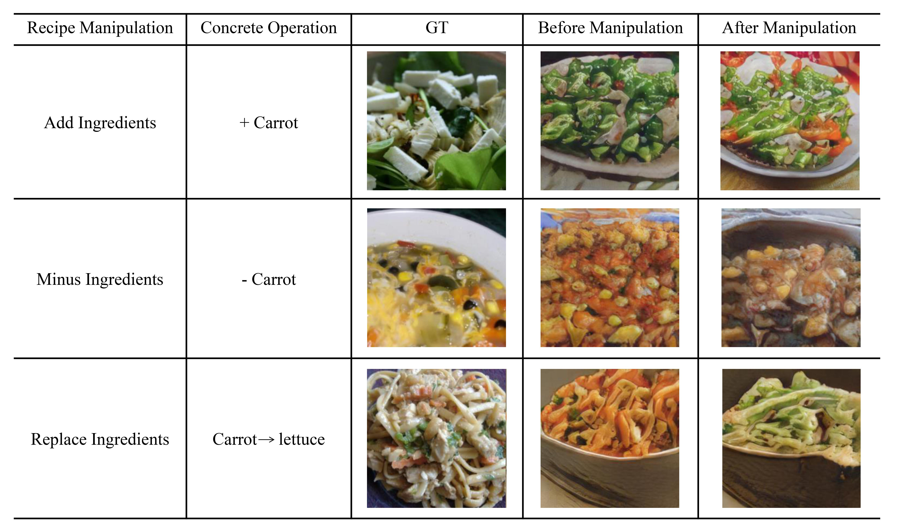

CookGAN: Causality based Text-to-Image Synthesis
Bin Zhu Chong-Wah Ngo
Vireo, City University of Hong Kong
CVPR 2020

Abstract
This paper addresses the problem of text-to-image synthesis from a new perspective, i.e., the cause-and-effect chain in image generation. Causality is a common phenomenon in cooking. The dish appearance changes depending on the cooking actions and ingredients. The challenge of synthesis is that a generated image should depict the visual result of action-on-object. This paper presents a new network architecture, CookGAN, that mimics visual effect in causality chain, preserves fine-grained details and progressively upsamples image. Particularly, a cooking simulator sub-network is proposed to incrementally make changes to food images based on the interaction between ingredients and cooking methods over a series of steps. Experiments on Recipe1M verify that CookGAN manages to generate food images with reasonably impressive inception score. Furthermore, the images are semantically interpretable and manipulable.
Model
The food image of a recipe is progressively upsampled from resolution of 64x64 to 256x256. The Cooking Simulator is a tailor-made sub-network to implicitly model cause-and-effect visual change in cooking process.

Cooking Simulator prepares image attended ingredient features and "cooked" features for upsampling of food image. The GRUs are initialized with the image attended ingredient features. At each step of cooking, a GRU cell turns the image attended ingredient features into a new hidden state, modeling the change in ingredients as result of a cooking action.

Content Manipulability
An advantage of CookGAN is that an image can be pro- duced on-the-fly by incremental manipulation of a recipe, for example, through semantically changing ingredient list.

Citation
@inproceedings{zhu2020cookgan,
title={CookGAN: Causality based Text-to-Image Synthesis},
author={Zhu, Bin and Ngo, Chong-Wah},
booktitle={Proceedings of the IEEE Conference on Computer Vision and Pattern Recognition},
year={2020}
}
@inproceedings{zhu2019r2gan,
title={R2GAN: Cross-modal recipe retrieval with generative adversarial network},
author={Zhu, Bin and Ngo, Chong-Wah and Chen, Jingjing and Hao, Yanbin},
booktitle={Proceedings of the IEEE Conference on Computer Vision and Pattern Recognition},
pages={11477--11486},
year={2019}
}